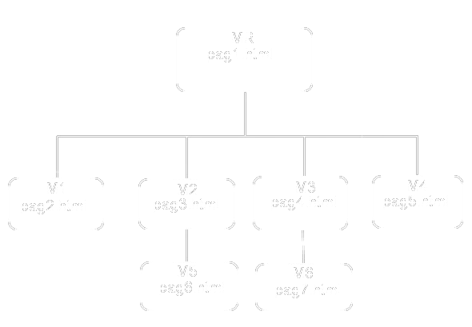

Până acum am invățat să creăm documente HTML în care am introdus text și imagini. în acest capitol vom arăta cum putem accesa orice resursă Web, Internet și internă cu ajutorul referințelor (legături, link-uri, hiperlegături).
Referințele au următoarele roluri:
Marcajul <a>
Pentru a crea o legătură se folosește marcajul <a> ancoră, care are sintaxa: <a atribute> conținut <>/a>
Conținutul dintre marcajele <a> și </a> poate fi text și/sau imagine, este afișat de browser sub formă de legătură (colorat și subliniat), și poate accepta comenzi de la mouse (un clic) sau de la tastatură (ENTER).
Când este deasupra unei legături, cursorul grafic ia forma unei mâini, indicându-ne astfel că browser-ul este pregătit să descarce resursa Internet de la adresa URL indicată.
Dacă un document are mai multe legături ne putem deplasa de la una la alta și cu mouse-ul și cu ajutorul tastei TAB, iar pentru a face o legătură activă se execută clic cu butonul stâng pe legătură sau se tastează ENTER.
Atributele tag-ului <a> sunt:
- href;
- target;
- title;
- name;
Atributul href
Atributul href (referință hipertext) este obligatoriu pentru tag-ul legătură (ca src pentru elementul <img>), are sintaxa href="adresa URL" și are rolul de a identifica o adresă URL absolută (de pe Internet) sau relativă (locală).
In exemplul de mai jos dăm o referință către un fișier local, flori.jpg, și către pagina Colegiului de Informatică, de pe WEB:
<html>
<head> <title>Referinte</title></head>
<body>
<p>Florile mele preferate<a href="images/crini.jpg">Crini</a>
<p>Detalii despre Centrul de Excelenta in Informatica si Tehnologii Informationale
<a href="http://ceiti.md">CEITI</a>
</body>
</html>
Atributul target
Când utilizatorul activează o legătură, browser-ul inlocuiește fereastra care conține legătura cu o nouă fereastră, specificată de adresa URL din href.
Atributul target face să se schimbe această operație implicită și el are sintaxa target="nume", unde nume definește fereastra în care va fi incărcată noua pagină.
Numele este orice șir de caractere sau valori constante:
- _blank pagina va fi incărcată într-o nouă fereastră;
- _parent pagina va fi incărcată în fereastra părinte;
- _top pagina va fi incărcată în fereastra top a cadrului;
- _self pagina va fi incărcată în aceeași fereastră(implicită).
<html>
<head> <title>Referinte</title></head>
<body>
<p>Florile mele preferate<a href="images/crini.jpg">Crini</a>
<p>Detalii despre Colegiul de Informatica
<a href="http://ceiti.md" target="_blank" >CIC</a>
</body>
</html>
Atributul title
Acest atribut are un caracter general și poate fi atașat la majoritatea elementelor HTML.
Sintaxa acestui element este: title="valoare".
Când mouse-ul este deasupra conținutului tag-ului <a> conținut </a> se transformă într-o mână și va afișa valoarea atributului title, într-o sugestie de instrument (într-un cadru).
<html>
<head> <title>Referinte</title></head>
<body>
<p>Florile mele preferate<a href="images/crini.jpg">Crini</a>
<p>Detalii despre Colegiul de Informatica
<a href="http://ceiti.md" title="Colegiul de Informatica" >CIC</a>
</body>
</html>
Atributul name
Acest atribut este utilizat pentru a defini o ancoră în interiorul unei pagini.
Sintaxa acestui atribut este: name="valoare".
Referințe către alte pagini Web
Dacă se dorește accesarea unei pagini de pe alt site, valoarea atributului href este o adresă URL absolută.
Amintim că o adresa URL absolută are sintaxa: protocol /nume-calculator/cale/fișier unde protocol poate fi, de exemplu, http.
Exemplu:
<html>
<head></head>
<body>
Pentru mai multe informatii despre <br>
invatamint vizitati site-ul Ministerul Educatiei
<a href="http://www.edu.md"> ME</a>
</body>
</html>
Același rezultat obținem dacă scriem și numele fișierului index(default) care se incarcă <a href="http://www.edu.md/index.php"> ME </a>
Dacă se dorește să se viziteze altă pagină a respectivului site, se scrie numele fișierului .php(.html), respectiv.
Referinte cu imagini
Așa cum am specificat mai sus, o legătură poate fi creată și cu ajutorul unei imagini.
Ca și în cazul în care conținutul unei legături este un text, și în cazul în care conținutul este o imagine, accesarea paginii se face cu un clic, sau un ENTER pe imagine.
Exemplu:
<html>
<head> <title> Legaturi cu imagini </title> </head>
<body>
Colegiul de Informatica din Chisinau
<a href="http://ceiti.md">
<img src= "http://ceiti.md/galerie/content/Exteriorul colegiului/IMG_1631.jpg">
</a>
</body>
</html>
Un link poate fi format și din text și din imagine adică:
<html>
<head> <title> Legaturi cu imagini </title> </head>
<body>
Colegiul de Informatica din Chisinau
<a href="http://ceiti.md">CIC
<img src= "http://ceiti.md/galerie/content/Exteriorul colegiului/IMG_1631.jpg" width=70 height=70>
</a>
</body>
</html>
Referințe cu adrese URL relative
Adresele URL relative sunt acele adrese care fac referire la pagini de pe calculatorul propriu, indicând cale/nume-fișier, fără a fi prefixate de protocol și nume calculator.
In adresele relative putem folosi caracterele ../ – pentru a urca un nivel în structura de directoare(către directorul părinte).
Se cunoaște faptul că un site poate să aibă paginile (fișierele) organizate într-o structură arborescentă de directoare.
Să presupunem că avem următoarea structura arborescentă:

Conform structurei arboriscente date din pagina pag6.html din mapa M5 se pot accesa celelalte pagini, utilizând următoarele referințe:
- ../../pag1.html
- ../../M1/pag2.html
- ../../M3/M6/pag7.html
<html>
<head> <title> Referinte relative </title> </head>
<body>
Pagina7
<a href="../../M4/pag5.html"> Referinta catre pagina pag5.html </a>
</body>
</html>
<html>
<head> <title> Referinte relative </title> </head>
<body>
Pagina5
<a href="../M3/M6/pag7.html"> Referinta catre pagina pag7.html </a>
</body>
</html>
Referințe către informații non Web
Se pot face referințe și la adrese URL absolute de pe Internet, care nu sunt resurse Web.
In adresele URL absolute se inlocuiește protocolul http cu alte protocoale non Web (ftp, telnet, gopher etc.).
Exemplu:
<html>
<head></head>
<body>
<ul>
<li><a href="ftp://gatekepper.dec.com" >Vizitati locatia</a></li>
<li><a href="ftp://ftp.arsc.edu"> Educatie</a> </li>
<li><a href="telnet://well.com" > Whole Earth</a></li>
<li><a href="gopher://gopher.loc.gov"> GongresGopher</a></li>
</ul>
</body>
</html> </p>
.Referințe către fișiere non HTML
Se pot stabili legături către orice tip de fișiere, nu numai html, ca de exemplu .pdf, .txt, .gif, .rar, .zip, etc. în aceste condiții se intâlnesc două situații:
- Browser-ul nu poate lucra cu fișierul intâlnit și atunci incearcă să-l descarce, executând operația download.
- Browser-ul cunoaște tipul de fișier și acesta va fi deschis în fereastra sa.
Exemplu
<html>
<head></head>
<body>
<a href="pag_2.pdf"> Fisier PDF</a> <br>
<a href="doc.txt">Fisier TXT </a> <br>
<a href="../files/tabel_culori.rar"> Fisier RAR </a> <br>
<a href="http://ceiti.md/galerie/content/Exteriorul colegiului/IMG_1631.jpg">Fisier JPG </a>
</body>
</html></p>
Referințe interne în cadrul unei pagini
În această secțiune vom defini ancore (ținte) într-o pagină, adăugarea legăturilor către aceste ținte, precum și legături către ținte din documente externe.
Dacă documentele HTML sunt prea lungi și sunt greu de parcurs, pentru a evita parcurgerea cu bara de defilare, se definesc ancore.
Ancorele ne permit să ne deplasăm rapid intr-un loc din document.
Ancora este un identificator al inceputului unui element dintr-o pagină web.
Dacă au fost definite ancore într-o pagină, se pot crea legături către respectivele ancore.
Ancorele se pot defini în două moduri:
- utilizând orice element HTML, inclusiv elementul <a> cu atributul id, de exemplu: <p id="valoare_id"> sau <a id="valoare_id"> </a>
- utilizând tag-ul <a> cu atributul name, de exemplu: <a name="valoare_nume"> </a>
Pentru a crea o legătură la o ancoră se folosește tag-ul <a>...</a> cu atributul href, care are ca valoare o referință de ancoră, precedată de simbolul “#”, astfel:
- # valoare_nume
- # valoare_id
Fișierul trebuie să fie suficient de mare, astfel оncât secvența care conține o ancoră să nu fie vizibilă în momentul trimiterii către ea.
Ca exemplu să considerăm agenda grupei I-942:
<html>
<head>
<title>Agenda grupei</title>
</head>
<body>
<h1 align="center"> Agenda grupei I-942<br />
<p>
<a href="#a-c"> [A-C] </a>
<a href="#d-h"> [D-H] </a>
<a href="#i-l"> [I-L] </a>
<a href="#m-n"> [M-N] </a>
<a href="#o-s"> [O-S] </a>
<a href="#t-w"> [T-W] </a>
</h1>
<br />
<hr size="4" width="100%" align="center" color="#666666">
<br />
<pre>
<h1>
<p id="a-c"> [A-C] </p>
1.Bogdan Constantin
2.Budu Tudor
3.Buzu Gheorghe
4.Casian Olea
5.Casparov Pavel
6.Cebotari Ecaterina
7.Cibuc Nicolae
8.Ciusca Cristian
9.Coslet Vladislav
10.Cotărău Alina
11. ...
<p id="d-h"> [D-H] </p>
1.Dabija Viorel
2.Gabura Ruslan
3.Gorobet Lilian
4. ...
<p id="i-l"> [I-L] </p>
1.Lungu Inga
2. ...
<p id="m-n"> [M-N] </p></p>
1.Melestean Alexandru
2.Mititelu Dumitru
3. ...
<p id="o-s"> [O-S] </p>
1.Podolean Ion
2.Popovici Victor
3.Puzur Gheorghe
4.Savin Victor
5.Scutelnic Valeria
6.Smolenschi Mihai
7.Stefanica Victor
8.Strelciuc Victoria
9. ...
<p id="t-w"> [T-W] </p>
1.Todirascu Mihaela
2.Toma Cristian
3.Vasiloi Alexandru
4. ...
</body>
</html>
Trimiterea automata a unui e-mail
Dacă dorim să trimitem un e-mail dintr-o pagină, se creează o legătură la o adresă e-mail. Legătura va avea atributul href a cărui valoare este mailto (protocol pentru poștă), urmată de”:” și de o adresă de e-mail validă, de exemplu:
<a href="mailto:cio3banu@yahoo.com"> Puteti să-mi scrieti </a>
Se poate folosi elementul <adress> de formatare logică, care are rolul de a evidenția o adresă (mesajul se va scrie la început de linie), așa cum reiese din exemplu de mai jos. Sintaxa elementului <adress> este:
<adress> <a href="mailto:cio3banu@yahoo.com"> Puteti să-mi scrieti </a> </adress>
Când se execută clic pe o legătură e-mail, se va deschide o aplicație e-mail care are, în câmpul To, adresa din legătură și care permite să introducem mesajul.
Se poate trece și un subiect, care va fi despărțit de adresă prin “?”, precum și un text în interiorul mesajului (de forma body=text) și care se va separa de subiect prin caracterul “&”, ca în exemplul de mai jos:
<html>
<head></head>
<body>
<adress>
<a href="mailto:cio3banu@yahoo.com"> Puteți să-mi scrieti</a>
</adress>
</body>
</html>
Culorile referintelor
O referință poate fi în una din stările:
- activă
- vizitată
- nevizitată
În funcție de starea în care se află, o legătură are o anumită culoare și anume:
- Starea activă are culoarea implicită roșu (#FF0000). Culoarea se poate schimba cu atributul alink=”culoare” al elementului < body>
- Starea vizitată are culoarea implicită purple (#800080). Culoarea se poate schimba cu atributul vlink=”culoare” al elementului < body>
- Starea nevizitată are culoarea implicită albastru (#0000FF). Culoarea se poate schimba cu atributul link=”culoare” al elementului < body>
<html>
<head></head>
<body alink="green" vlink="red" link="blue">
<ul>
<li><a href="http://ceiti.md">CIC</a>
<li><a href="http://cfbc.md">CFBC</a>
<li><a href="http://ccc.md">CCC</a>
</ul>
</body>
</html>